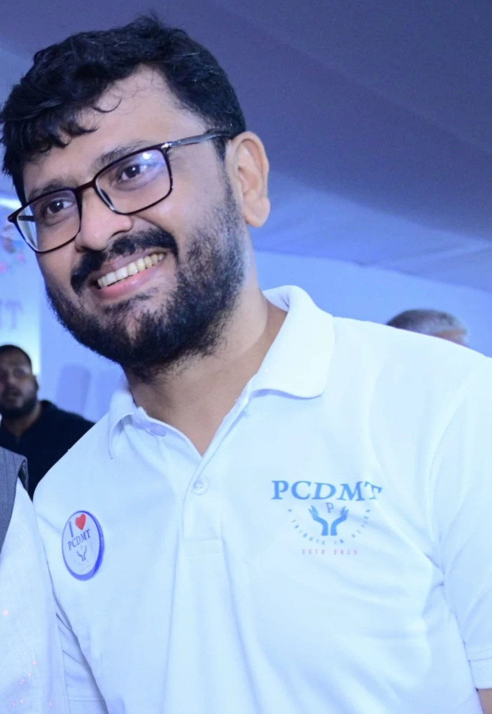

Founder · Visionary · Humanitarian
Built this trust in loving memory of his father, Pratap Chandra Das.

Srikrushna Kumar Das is not an ordinary man. Driven by deep love for his father, Pratap Chandra Das, and an unshakeable belief in the dignity of every human being, he channelled grief into purpose — and purpose into action.
Growing up alongside his father, he witnessed first-hand what selfless service looked like — the farmer with no safety net, the elderly woman with no one to care for her, the child too poor to attend school. These images never left him. They became the driving force behind everything he built.
He believed, with absolute conviction, that compassion was not a charitable impulse — it was a moral imperative. His vision was simple but radical: build a system of care that reached those society had forgotten, and sustain it through the generosity of those who still believed in humanity.
His tireless and selfless efforts led to the formation of the Pratap Chandra Das Memorial Trust — an institution founded in his father's honour that continues to grow, serve, and inspire, carrying forward that spirit in every meal served, every elder honoured, and every life rescued.
The values Srikrushna Kumar Das lives by are now woven into every program, every decision, and every act of service this trust undertakes.
He believed that true service comes with no strings attached — no regard for caste, class, or creed. Every person deserved dignity and care, unconditionally.
Suffering could not wait for a perfect plan. He taught us that imperfect action taken with genuine heart was always superior to cautious inaction.
He looked beyond today's immediate needs. Every act of service was an investment in the future — building capacity and hope that would outlast any individual life.
He placed the community above personal recognition. The measure of a life, he often said, was not in what you accumulated but in how many you uplifted.
For him, love was never passive. It manifested as showing up, as giving, as staying when others left. Love was the engine that drove everything he built.
He was never interested in one-time gestures. He wanted structures, systems, and institutions that would serve communities long after any single individual was gone.
Compassion is not a luxury — it is the very foundation of a just society. Every person who goes to bed hungry, every elder who is forgotten, every life left unattended — these are not strangers. They are our own. When we serve them, we serve something far greater than ourselves. Let this trust be a living testament that ordinary people, acting together with love, can create extraordinary change.
What he started as a dream of service has become a movement of hope — touching thousands of lives through the programs he envisioned and the values he embodied every day.
Families across communities who have received food, care, and emergency support in his name.
Anand Arna Seba, Sanman Seba, Jiban Rakhshya Seba and Abasyak Seba — each a direct expression of his beliefs.
Individuals who believe in continuing his work, each carrying a piece of his spirit forward.
The trust was founded in his memory — dedicated to perpetuating the values he lived and breathed.
When you give, you keep Srikrushna Kumar Das's vision alive — and you become part of a story that began with one man's unshakeable belief in humanity.
No registration needed · UPI & bank transfer accepted · Receipt on WhatsApp